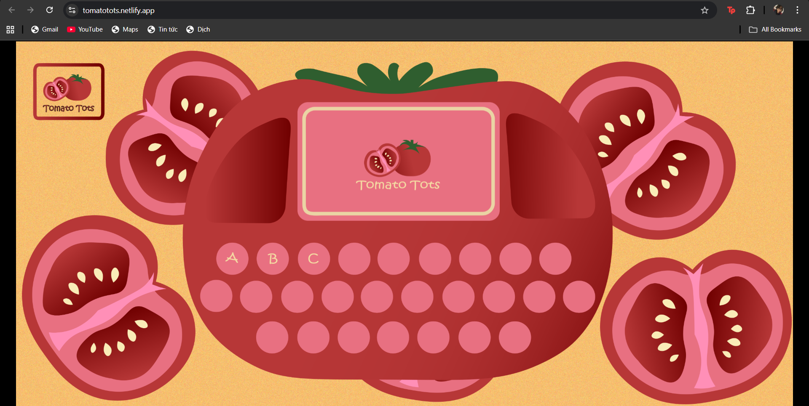
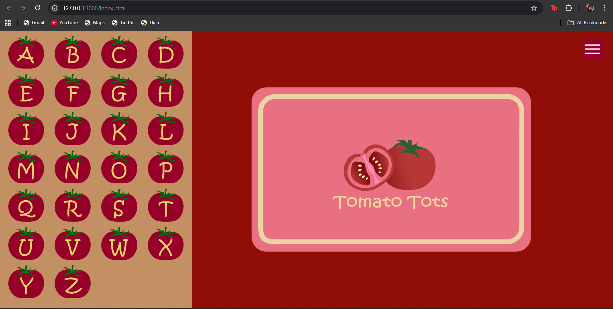

Course name: Specialization 2 - Interface Design and Development
Course code: COMM2751
Student name: Vo Ngoc Truc Vy
Student ID: s4044874
My project, Tomato Tots, is an interactive webpage designed for young children to learn the alphabet through playful interaction. Each letter of the alphabet is represented by a bright, tomato-shaped button. When a button is clicked, the main card on the screen flips to reveal a related image, the corresponding word, and a short audio clip that pronounces the word aloud. Clicking again on the same letter reveals another word beginning with that letter, allowing children to discover multiple examples while staying within the same context.
The name “Tomato Tots” was chosen for its playful rhythm and familiarity. It combines two simple, friendly words that children can easily remember and pronounce. The tomato theme ties the interface together visually - the alphabet buttons resemble small red tomatoes, which makes the experience more cohesive and memorable. The friendly and organic theme also creates a warm, everyday environment where learning feels lighthearted rather than instructional.
Conceptually, the project focuses on multi-sensory learning by combining visual (letters and images), auditory (pronunciation sounds), and kinesthetic (click interaction) elements. This allows children to connect sounds with letters and words in an intuitive way. The repetition of pressing buttons reinforces learning, while the card-flip animation creates excitement and anticipation - turning the simple act of learning letters into a game-like experience.
Visually, the interface uses a red and yellow color palette - colors that are bright, energetic, and attention-grabbing but not overwhelming. Red connects to the tomato theme, while yellow evokes positivity and warmth, helping to keep the mood cheerful and motivating. The overall look supports focus and engagement without overstimulation.
All illustrations and most sound effects were custom-made, ensuring the design feels unique and cohesive. Even small details, like a custom cursor, were added to make the experience feel more playful and tailored to children’s curiosity. I wanted Tomato Tots to feel fun, simple, and self-explanatory, reflecting the principles of learnability and feedback in interaction design. The flipping animation and sound feedback ensure that children know their action was successful, helping them stay engaged and motivated.
The project engages directly with the course prompt “All Text Characters”, using the alphabet as the main interaction trigger. The supporting technique - randomisation via Math.random() - adds variation and fun by showing different words each time.
The tomato theme and rounded design reflect a child-centred visual language, making the interface friendly and familiar. The use of sound, motion, and image creates a multimodal learning environment that aligns with early-education interaction principles.
Peer feedback highlighted strong aesthetics and engagement but noted layout inconsistency on different screens. This led to a redesigned two-column layout (35% buttons / 65% card area), improving functionality and learnability while preserving the playful character of the original.
To support accessibility further, I introduced a custom cursor system — a friendly tomato-style pointer that changes when hovering over buttons, providing clear visual feedback for interactive areas.
The UI is built with HTML, CSS, and JavaScript, supported by custom artwork and audio assets.
Most of the illustrations and sound effects were custom-made, while a few sound clips (e.g., for “Apple”, “Ant”, “Book”, “Igloo”, “Ice-cream”) were sourced from licensed community resources and are fully credited within the popup.
This structure is simple yet robust, demonstrating practical application of web-based interaction techniques and responsive design principles.
Throughout production, my guiding value was playful learning through simplicity - avoiding clutter so that each action feels clear, rewarding, and intuitive.
I spent the early weeks designing and illustrating the custom assets, followed by prototyping the interaction logic and refining responsiveness based on testing. After the peer testing session, I realised that a major issue existed - some users could not interact with the website at all. This feedback led me to re-evaluate my priorities and shift focus from purely visual aesthetics to usability and accessibility.
I redesigned the entire interface to ensure the website functions consistently across devices and screen sizes. Key improvements included enlarging the buttons (to better suit young users’ motor skills), restructuring the layout into two clear sections - buttons on the left and the card area on the right and ensuring the proportions between these elements are balanced and easy to navigate.
Original design
Re-design version
The biggest challenge was maintaining aesthetic charm while improving technical stability and responsiveness. I learned to balance artistic style with practical interaction design - something I initially underestimated.
I am most proud of how the visual, audio, and interactive feedback now work together harmoniously, creating a joyful cause-and-effect experience for kids. Future iterations could extend to the full alphabet set, preload audio for smoother playback, and add a gentle background track for immersion.
This project taught me how thoughtful UI structure and attention to user context can turn a simple idea into an engaging, educational, and meaningful interactive experience.